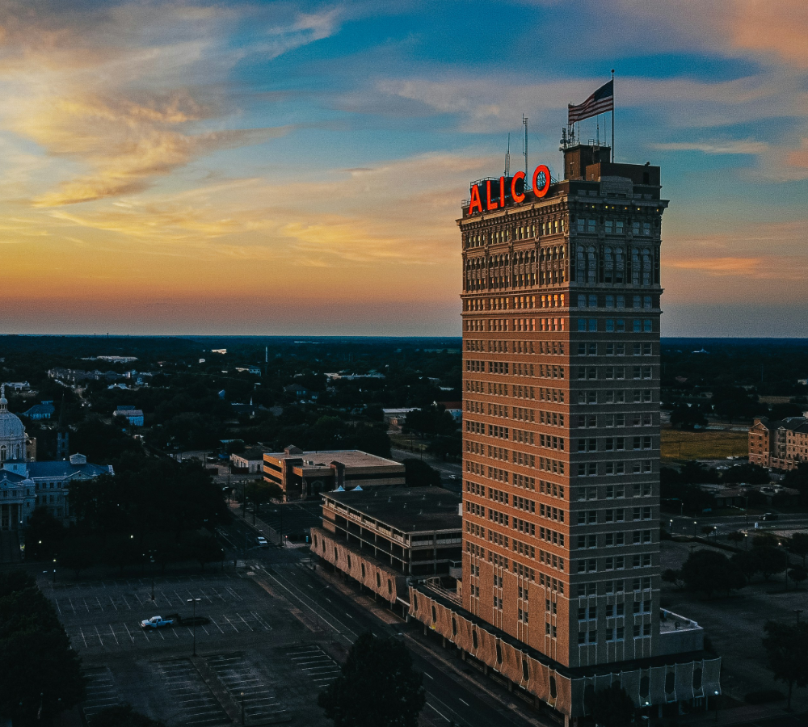
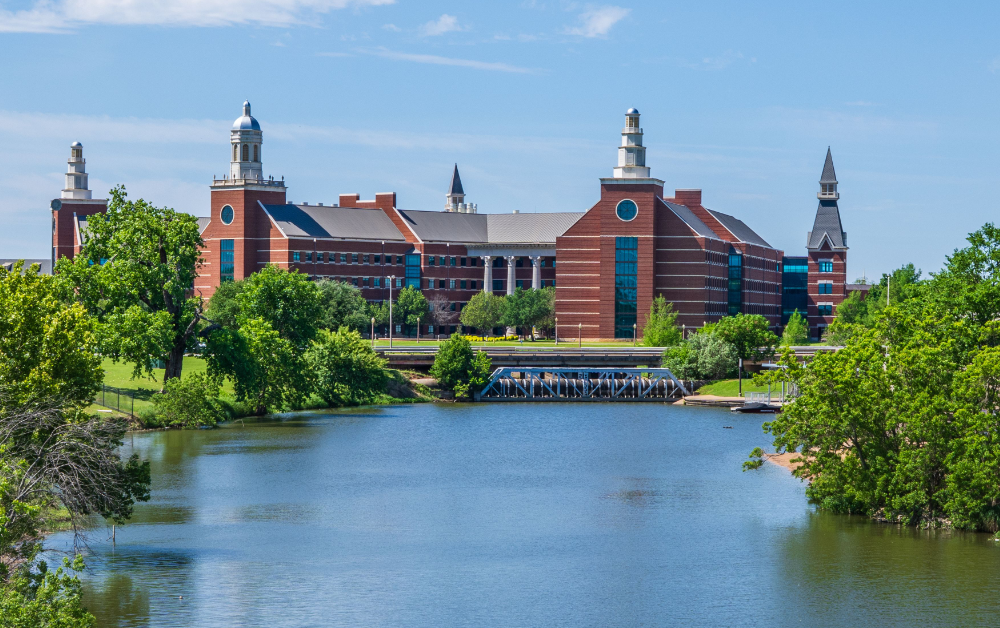
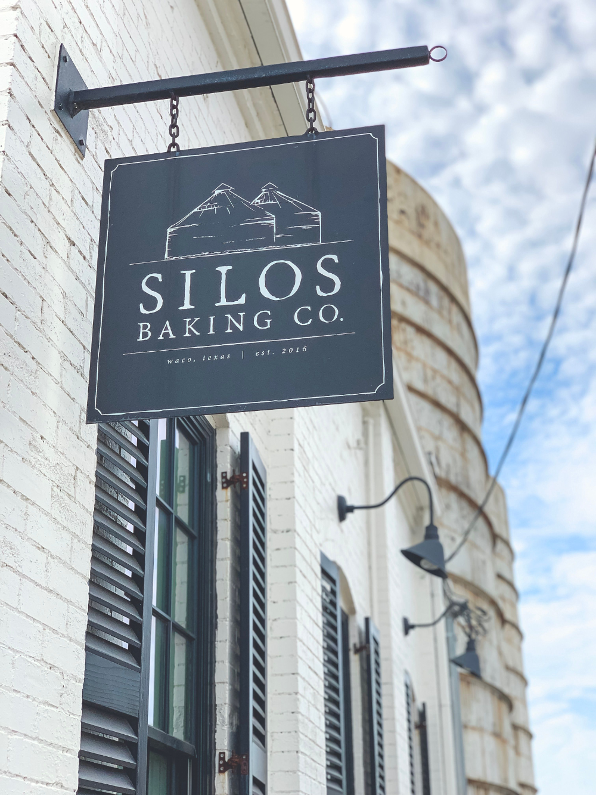

Overview of Waco

Waco is an urban city located halfway between Dallas and Austin in Central Texas. Both the Brazos River and the major interstate highway, I-35, run through the city. Despite the advantageous location, Waco is relatively small in comparison to other major cities in Texas, both in terms of population and development (the tallest building in the city is the ALICO office, which stands at only 22-stories tall). That said, it would not be considered a "small town" by any means, and the city is actively developing its infrastructure to support a larger population.
The city was incorporated on March 1, 1849 under the name "Waco Village". A year after the suspension bridge across the Brazos river was complete, which caused an economic boom, the village was reincorporated as the "City of Waco". Waco has a humid subtropical climate, i.e. it has mild winters and hot summers. In fact, temperatures as high as 90 °F has been recorded in every single month of the year—including January. The city spans 95.5 square miles. 11.3 square miles (about 12%) of that is water.
Dr Pepper, the beverage of choice for most Texans, was originally concocted in Waco in 1885. Another beloved Texas soda is Big Red, which was created in Waco in 1937. Bush's Chicken, a fast food chain that specializes in fried chicken, was also founded in Waco back in 1996. The types of food popular with Waco residents is very similar to the rest of Texas; BBQ, Tex-Mex, and fried comfort foods are staples in many local restaurants. No matter the meal, the people of Waco generally agree that it is best served with a nice, cold glass of Dr Pepper.

Economy
The median Waco household income in 2024 was $53,365, and barely 50% of homes were occupied by the owner (compared to the national average of 65%).The median cost of a residential property in 2024 was $221,700. 15% of residents did not have medical insurance in 2024, which was an increase from 2023. 23% of the population lives below the poverty line, which is significantly higher than the 12.5% national average. It is also higher than other major Texas cities such as Dallas (16.7%) and Austin.
Technically the cost of living is lower in Waco than it is in other Texas cities, however salaries also reflect that lower cost of living. Most expenses in Waco are right at the national average, but housing is significantly cheaper. That said, property taxes vary depending on the location (specifically the county, city, school district, et c.) and can raise monthly expenses by a lot. Waco's economy is not nearly as strong as other major cities, but with a decent job it can be a nice place to live. Compared to the state average salary of $55,200 a year ($4,600 a month), Waco's average salary is $48,451.
Transportation
All of the major roads are under construction simultaneously at all times in Waco, including a large portion of the interstate, making the average commute time comparable to much larger cities. The Waco Transit System provides a public bus service that runs every day except Sunday through most of the city. Bike lanes and sidewalks are minimal and limited mainly to University Parks and Downtown Waco; the roads of Waco were not designed with anything except for automobile travel in mind.
Top Job Fields in Waco
The top five industries in Waco are advanced manufacturing (e.g. food, transportation equipment, and pharmaceuticals), aerospace and defense (e.g. product research, manufacturing, and engineering), supply chain management (Waco boasts more than 420 distribution centers), health care (medical services and equipment), and professional and financial services (e.g. legal, accounting, insurance, consulting, design, engineering, et c.).
| Rank | Job Title | Local Median Salary | National Median Salary |
|---|---|---|---|
| 1 | Research Scientist | $115,512 | $130,117 |
| 2 | Box Truck Owner Operator | $101,623 | $114,472 |
| 3 | Construction | $84,486 | $95,168 |
| 4 | RN | $78,005 | $87,868 |
| 5 | Medical Technologist | $73,307 | $65,079 |
Demographics
In 2024, the population of Waco was 143,570 people and there were 53.9k households. About 31% of households in 2020 had children. The 2020 census data shows that 50% of the population is White, 20% is Black, 32% is Hispanic, 3% is Asian, and 27% are mixed or another race not listed. 11% of residents are foreign-born, many of whom migrated from Mexico, India, or El Salvador. The median age in 2020 was 31 years old, and for every 100 women, there was 93 men.
Education
Waco only has three colleges: a trade school, a community college, and a university. McLennan Community College is open to all residents of Mclennan County. Texas State Technical College is a renowned trade school known for its high job placement of graduates. Baylor University is a Christian University with several popular sports teams that frequently compete.
Local Hotspots
Waco has a decent variety and number of things to do for its size. There is a zoo, a huge park, a waterpark, a couple of museums, and multiple shopping centers.

Outdoor Recreation
- Cameron Park Zoo: A natural habitat zoo that incorporates native vegetation, waterfalls, a lake, and ponds into the exhibits.
- Cameron Park: A park surrounding Cameron Park Zoo which features many hiking trails and a river walk.
- Hawaiian Falls: A quaint waterpark with a lazy river, several slides, and a wave pool.
- Waco Mammoth National Monument: A paleontological site of the fossilized remains of 24 mammoths, among other mammals.
Good Eats
- DublR: A phenomenal family owned burger joint.
- Heritage Creamery: A locally owned ice cream shop that uses local ingredients for its rotating menu of homemade ice cream and baked goods
- Wako Roll: A restaurant that serves sushi and a wide array of traditional Korean dishes.
Entertainment
- Mayborn Museum Complex: A natural science and cultural history museum complex consisting of 3 different attractions.
- Dr Pepper Museum: The first manufacturing building constructed specifically for bottling Dr Pepper which stopped production in 1965 and was converted into a museum in 1989.
- Magnolia Market: A specialty shopping center spanning 2 blocks and built around two abandonded grain silos (built in 1950) and a large garden area.
- Richland Mall: A single story indoor mall.